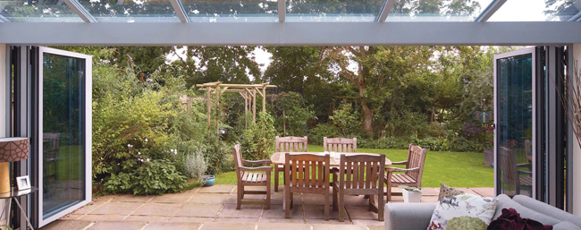

Bi-Folding Doors
Folding doors transform your home and the way you live your life; relax in stylish open plan living areas or enjoy a stunning panoramic view from your bedroom.

You will feel like you’re living the outside inside by opening entire façades in your home and make the most out of a beautiful garden. Any aspiration is possible with a Visofold slide folding door. These beautifully designed, versatile doors are suitable wherever you want to transform your home; living room, bedroom, kitchen, conservatory. The choice is yours.
The modern aesthetics of a Visofold slide folding door will add a touch of finesse to any external aspect of your home. When closed, Visofold complements your home with a striking glass façade with attractive curved characteristics that are pleasing to the eye. Fold the sashes back to give a stunning opening that draws the exterior ambience into the comfort of your home.
Your home will be protected from unwelcome visitors with the assurance given by high security multi-point locking mechanisms fitted on opening sashes, shoot bolt locks on floating mullions and internally glazed sealed units.